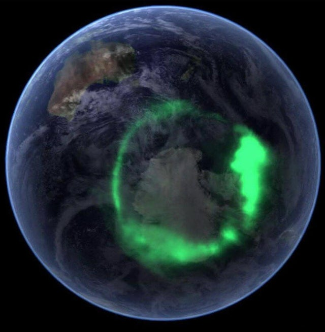
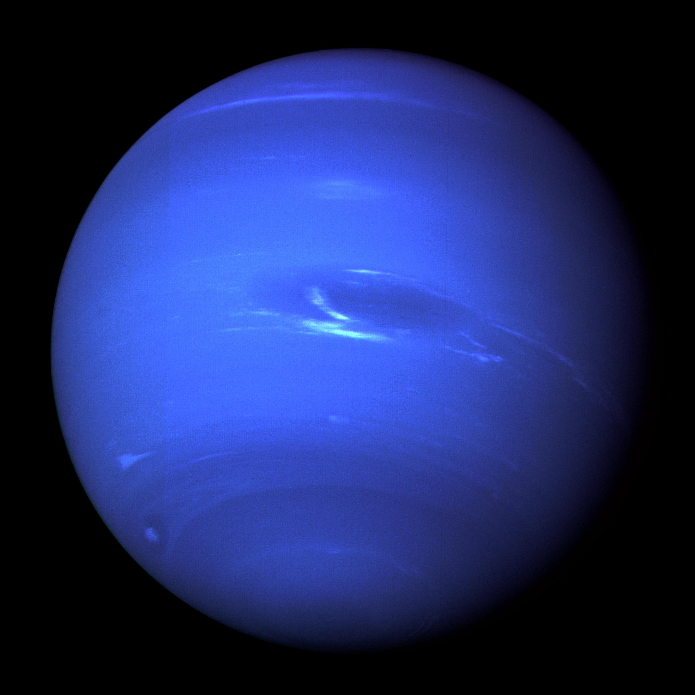
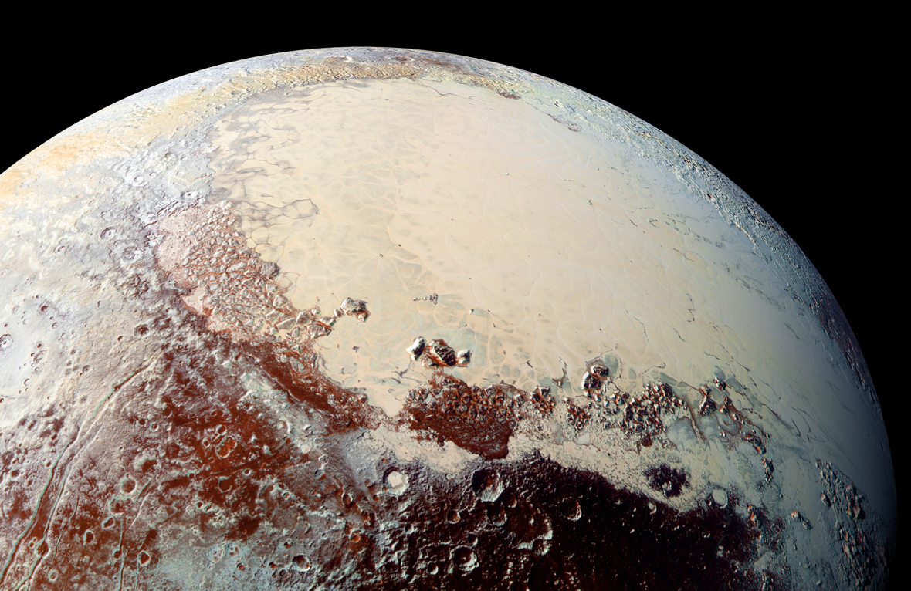

Système Solaire

On appelle Système solaire, l'ensemble des astres soumis au champ de gravitation du Soleil(notre étoile à elle seule représente 99,8 % de la masse totale du Système solaire !). Le Système solaire évolue dans l'un des bras de notre galaxie spirale, la Voie lactée, à quelque 26.000 années-lumière de son centre. Selon les définitions établies par l'Union astronomique internationale, notre Système solaire comprend notamment : Huit planètes -- et leurs satellites naturels ; il y en a plus de 175 connus -- que sont Mercure, Vénus, la Terre, Mars, Jupiter, Saturne, Uranus et Neptune, par ordre d'éloignement au Soleil. Les quatre premières sont qualifiées de planètes telluriques, les quatre dernières, de planètes gazeuses.Des planètes naines comme Pluton ou Cérès.Plusieurs centaines de milliers d'astéroïdes composés de roches et de minéraux métalliques essentiellement. Leur taille est extrêmement variable, de plusieurs centaines de kilomètres aux grains de poussière. Ils sont regroupés majoritairement dans la Ceinture d'astéroïdes principale, située entre Mars et Jupiter.Des milliers de comètes composées de poussières et de glaces volatiles.D'innombrables petits corps glacés comme les Centaures -- qui orbitent entre Jupiter et Neptune -- ou encore les objets transneptuniens dans la lointaine Ceinture de Kuiper.
Au-delà de la Ceinture de Kuiper se trouverait un gigantesque ensemble de corps glacés baptisé nuage d'Oort. Sa limite externe marquerait la limite de l’influence gravitationnelle du Soleil. Les astronomes estiment qu'elle se situe quelque part entre 1,6 et 2 années-lumière -- soit entre 101.186 et 126.482 unités astronomiques -- de notre étoile ! Mais l'héliosphère -- cette bulle créée par les vents solaires -- ne s'étend pas aussi loin. Le milieu interstellaire l'interrompt dans une direction à une centaine d'unités astronomiques, soit seulement quelque 0,002 année-lumière. Notez que le Système solaire réserve sans doute encore des surprises aux astronomes. Certaines régions comme la zone située entre le Soleil et Mercure sont encore mal connues. Les orbites de plusieurs objets transneptuniens suggèrent qu'une neuvième planète, peut-être 4 fois plus grande que la Terre et 10 fois plus massive, pourrait se cacher aux confins de notre Système solaire, entre 500 et 1.200 unités astronomiques du Soleil.
Articles Divers
Appuyez sur les images pour plus d'informations sur chaque planète
 |
 |
 |
| Mercure | Venus | Aurores Boréales |
 |
 |
 |
| Mars | Aurores de Jupiter | Saturne |
 |
 |  |
| Anneaux d'Uranus | Neptune | Pluton |
Rotation relative des Planètes
Transit de Mercure

Galaxies
Une galaxie est un ensemble d'étoiles, de poussières et de gaz interstellaires dont la cohésion est assurée par la gravitation. Les galaxies présentent une grande diversité de taille (entre 2.000 et 500.000 années-lumière de diamètre) et de forme. Le rayonnement provenant des galaxies permet de répartir ces dernières en galaxies normales et galaxies actives, parmi lesquelles se trouvent les quasars. Les regroupements de galaxies que l'on observe dans l'univers sont appelés amas et superamas. La galaxie à laquelle appartient le système solaire est la Voie lactée. La grande galaxie la plus proche de la Voie lactée, Andromède, est située à 2,3 millions d'années-lumière. Notre galaxie possède toutefois deux petites galaxies satellites (le grand et le petit Nuages de Magellan) situées respectivement à environ 150.000 et 200.000 années-lumière. Voilà moins d'un siècle que l'on est sûr que des objets comme la galaxie d'Andromède ou M87 sont bien des concentrations d'étoiles similaires à la Voie lactée, mais n'en faisant pas partie. Confirmant les intuitions de Thomas Wright et Emmanuel Kant, cette découverte a été faite par Edwin Hubble au début des années 1920. Plus tard, l'astronome et cosmologiste donna même une classification des galaxies, censée représenter un schéma évolutif. La séquence de Hubble n'est plus considérée comme telle aujourd'hui mais on continue à présenter la classification morphologique des galaxies qu'elle constitue. Elle comporte trois grands types. Il y a les spirales, contenant d'importantes quantités de gaz et de poussières, avec un disque où l'on trouve de jeunes étoiles et un bulbe plus ou moins important contenant des vielles étoiles. Viennent ensuite les elliptiques, principalement constituées de vieilles étoiles et pauvres en gaz et poussières, qui ont une structure sphéroïdale. Et enfin les irrégulières, de plus petite taille et riches en jeunes étoiles.

La Galaxie M87
Les Nébuleuses
Une nébuleuse est un nuage de gaz et de poussières répandu dans l’espace interstellaire. Jusqu’au siècle dernier, une nébuleuse était par définition un objet fixe dans le ciel. Avant l’invention du télescope, ce terme s’appliquait à tous les corps célestes d’apparence diffuse: ainsi, un grand nombre d’amas d’étoiles ou de galaxies furent appelées nébuleuses. Les nébuleuses sont exclusivement localisées dans la Voie Lactée et dans les autres galaxies. On distingue plusieurs types de nébuleuses, à savoir: les nébuleuses planétaires, constituées de gaz éjecté par une étoile, et les nébuleuses diffuses.